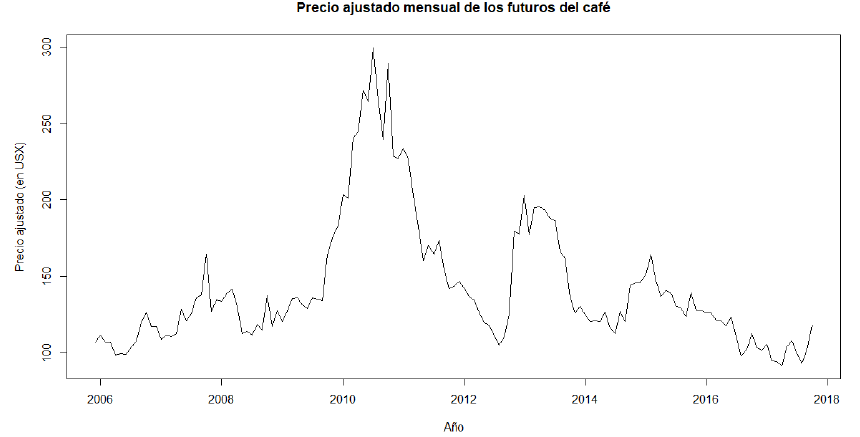
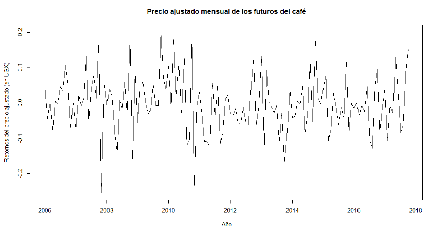
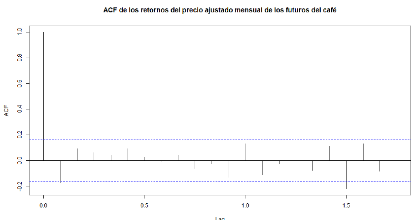
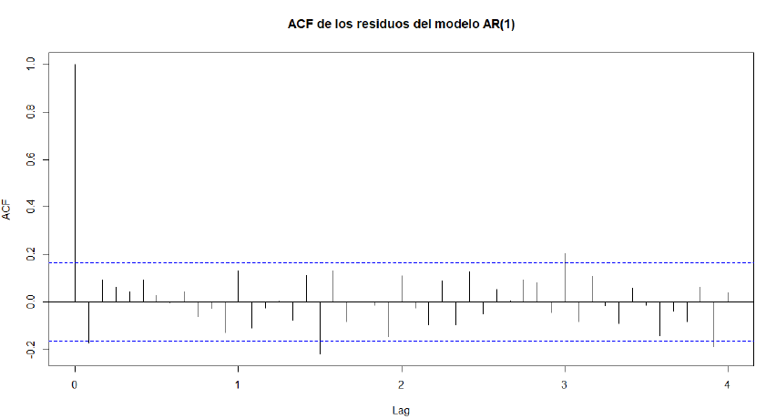
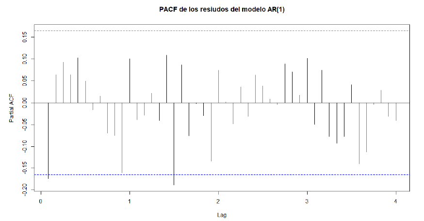

El mercado financiero se caracteriza por la variabilidad en el
comportamiento de los activos, por ello es de interés analizar modelos
que capten y logren predecir eficazmente la variación de los datos
respecto a su media y así tomar mejores decisiones en los mercados,
gobiernos e influir en la generación de políticas económicas.
En Honduras, el mercado del café es un rubro de relevancia en la
economía hodureña, al ser uno de los principales productores a nivel
internacional, por lo tanto, los cambios de precio en el mercado
internacional, repercuten directa y de manera negativa a los pequeños
productores, que constantemente están superando por falta de subsidios
para insumos y la presencia de crisis en los cultivos a raíz del clima
y plagas, a lo largo del año. Para ello se consideró los precios de
futuros del café C, cotizado en el mercado internacional para estimar
modelo que presenta un mejor ajuste en el pronóstico de los retornos.
Realizar una análisis los retornos del precio ajustado mensual de los futuros del café en el mercado entre 2005 y 2019.
Para este análisis se consideró los precios ajustados de futuros del
café C para la cosecha de marzo 2023, cuya contrato corresponde al
café arábiga, que pertenecen a las cotizaciones diarias realizadas en
el ICE (Intercontinental Exchange, Inc) en Nueva York. Los datos se
tomaron de Yahoo Finances (2022) 1 y consideraron con periodicidad
mensual desde diciembre 2005 a octubre 2017. Y corresponden a 143
observaciones. La divisa en que se calculan los precios es USX.
La serie original del precio ajustado mensual de futuros de café
en el mercado internacional presenta picos a lo largo del tiempo, lo
que indica crecimientos y evidenciado que la varianza no es la misma
para todos los datos; evidencia que la varianza no es constante.

Para estudiar la serie, se calcularán primero sus retornos, mediante la función Return.calculate() como retornos compuesto con una transformación logarítmica. En la serie se identifica un valor atípico y se procede a limpiar la serie. Esta serie exhibe la serie de retornos del precio del café ajustado. Esta tiene un comportamiento estable alrededor de cero, por lo tanto se percibe que podría ser estacionaria en media.

La serie no tiene una tendencia marcado a los largo de los años. Se caracteríza por subidas y bajadas irregulares. Y en general, su comportamiento se asemeja a la componente aleatoria. Sin embargo, el test de Dickey Fuller Aumentado proporciona un pvalue = 0,02976, para 5 rezagos lo que indica que es estacionaria, además no se necesita ninguna diferencia en media para estabilizarla. Los correologramas ACF y PACF de los retornos, indican tienen un comportamiento similar al ruido blanco. De esta manera, se procede a determinar el modelo que mejor se ajusta a los datos.


El modelo óptimo, según la función auto.arima(), para los datos es el AR(1) con media cero. La ecuación con sus parámetros es: Xt = −0,1760Xt−1. Con AIC = −307,71 y BIC=−301,8. Al revisar el ACF y PACF de los residuos,se percibe que estos se comportan como ruido blanco, aunque en ambos gráficos hay al menos un rezago significativo.


La prueba de "Ljung-Box"proporciona resultado no tan conluyentes, es
decir, para el primer rezago, los residuos no son independientes, pero
si se considera hasta el rezago 12, la prueba indica que los rezagos
si son independientes entre sí. Po otra parte, los residuos cuadrados
muestran un comportamiento interesante, ya que el único rezago
significativo es el lag:12, y el test de "Ljung-Box"sustenta que a
partir de ese valor existe dependencia de los rezagos cuadrados.
En conclusión, la serie se ajusta muy bien al modelo ARC(1) con media cero, cuyo residuos se comporan como ruido blanco, sin embargo, se detectó heterocedasticidad en los residuos cuadrados, por lo tanto podría considerar otro modelo para un mejor ajuste y pronóstico.